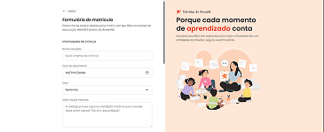
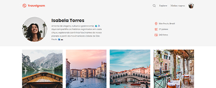
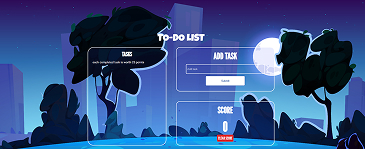
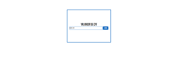
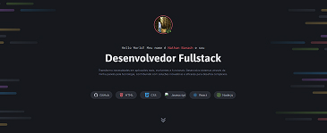
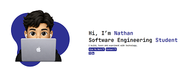
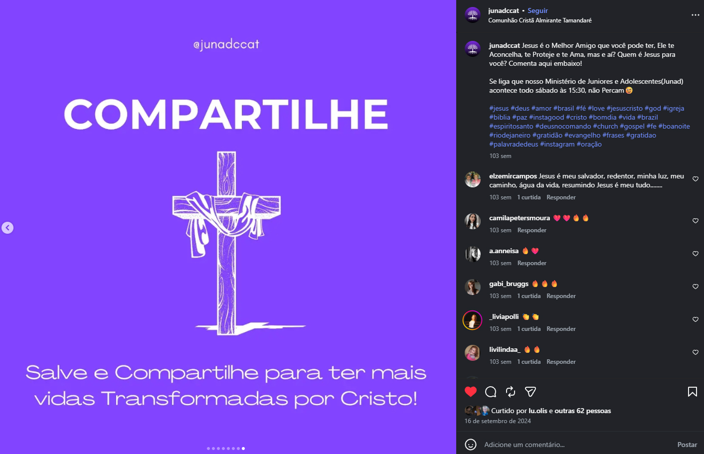
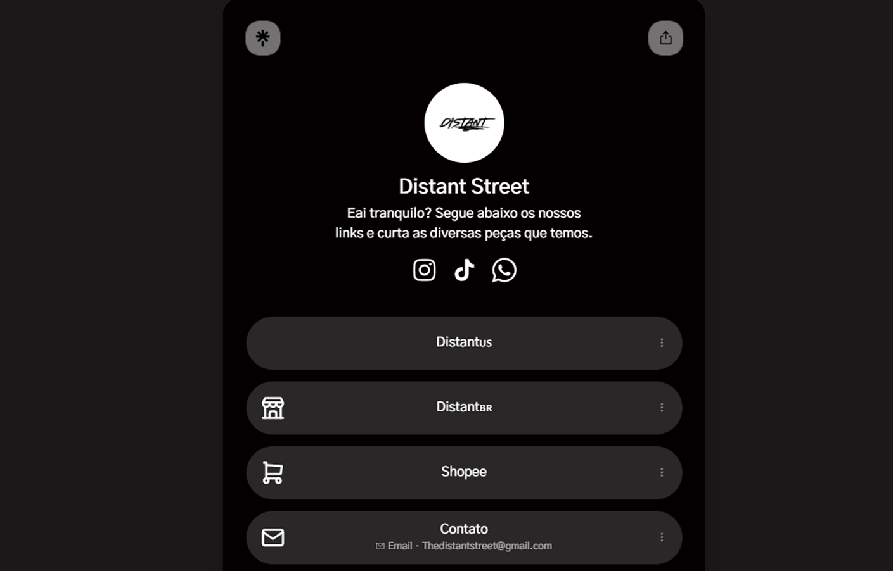
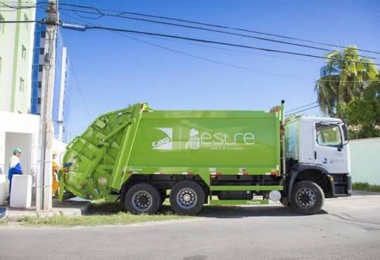
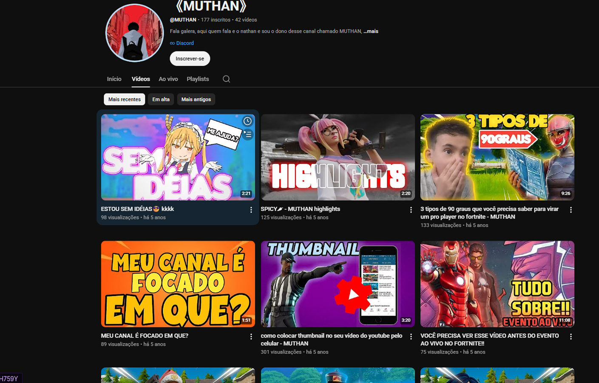

Hi, I’m Nathan
Software Engineering Student
I build, learn and experiment with technology.
Projects

Estrelas do Amanhã
Preschool enrollment form
HTML, CSS
View project

TravelGram
Isabela Torres's Travel Blog
HTML, CSS
View project

To Do List
A task management application built to practice JavaScript logic and DOM manipulation.
HTML, CSS, JS
View project

CPF Validator
A JavaScript tool for validating Brazilian CPF numbers.
HTML, CSS, JS
View project

Grid Portfolio
Portfolio where I developed the CSS Grid layout
HTML, CSS
View project

banach.com
Portfolio and Creations for Apple Developer Academy
HTML, CSS
View project
Creations

Social Media Volunteer
I volunteered as a social media creator for a church, creating content for social media, designing visual materials, and helping with digital communication. This experience strengthened my creativity, responsibility, and ability to communicate ideas visually.

Distant Street — Entrepreneurship
I created and managed Distant Street, a clothing store where I explored entrepreneurship, branding, and digital communication. I developed the store's visual identity and promoted its products through social media. This experience taught me how to turn an idea into a real project and communicate it to an audience.
IT Support — Estre Ambiental
I work as an IT Support Assistant at Estre Ambiental, providing technical support to employees and helping maintain the company's IT environment. I troubleshoot hardware and software issues, format computers, and assist with everyday technical needs. This experience has strengthened my problem-solving and communication skills.


YouTube — Creative Experiment
I created a YouTube channel as a personal creative project, exploring video production, content creation, and digital communication. It taught me to experiment, learn from mistakes, and turn my ideas into something I could share with others.